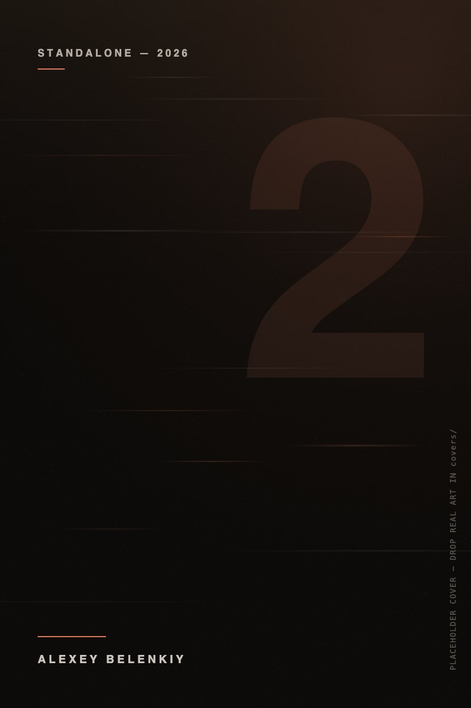

Сезон вторых солнц
Небо помнит другой финал.

- Год
- 2026
- Статус
- Скоро
PLACEHOLDER — Отдельный роман. После того как атмосферу отмотали к более чистому веку, прибрежный городок продолжает просыпаться под солнцем, которое больше не совпадает со своими тенями. Скоро.
Антиутопия
Климат
Путешествия во времени
Скоро
Ещё не в продаже. Линия времени ещё оседает.